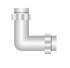

Element and Graphic Properties
All graphical elements in the Graphics Editor have multiple properties that can be modified to change the look and the behavior of the element. Element properties can be evaluated based on system or user input.

NOTE:
If you enter a value of more than15 digits into an element property or expression field, the value will be displayed in scientific notation. Digits beyond the first 15 are not displayed. For example: 9223372036854775807 will display as 9.22337203685478E+18 in the property or expression field.
For information on specific element and graphic properties, select from the following:
3D Effects Properties
NOTE: Shadows will appear blurry in Safari on a Mac and iPad.
3D Effects Properties | |
Property | Description |
Shadow Color | Specify a color for the shadow by typing a color name or using a hexadecimal color code. The default color is FF000000 (black). |
Shadow Depth | Enter a value to specify how far or close the shadow should display to the element. |
Shadow Direction | Enter a value to set where the shadow displays around the element. |
Advanced Properties
Advanced Properties | |
Property | Description |
Depth | Enter the name of a specific depth whose layers you want visible with a particular viewport. Displays when you are in the Viewport mode, and have a viewport selected. |
Disable Selection | If enabled, allows you to lock an element or data point reference so that it is not selectable in Runtime mode. By default this property is not enabled and elements and data points are selectable in Runtime mode. |
Grayscale Anti-Aliasing | Set a color image to gray-scale. Displays when you have an imported image or .XPS element selected on the canvas. |
High Quality | Smooth image pixels creating a higher resolution image. |
Link References | Displays a list of data point references that display the viewport in their related items. Displays when you are in the Viewport mode, and have a viewport selected. |
Max. Visibility | Set the maximum visibility range of a layer by entering the minimum value of the graphic width at a given zoom factor. Use the following equation to determine the value: Graphic width / zoom factor. For example, the graphic width is 500 pixels and the zoom factor is 2. The maximum visibility value for the property is 250. The layer is visible unless the graphic width changes and is higher than the set value. If blank, the default value is set to 0 and the property is inactive. |
Min. Visibility | Set the minimum visibility range of a layer by entering the minimum value of the graphic width at a given zoom factor. Use the following equation to determine the value: Graphic width / zoom factor. For example, the graphic width is 500 pixels and the zoom factor is 2. The minimum visibility value for the property is 250. The layer is visible unless the graphic width changes and is less than the set value. If blank, the default value is set to 0 and the property is inactive. |
Selection Reference | Set an element to be selectable in Runtime mode and in the Graphics Viewer. There are no COV subscriptions for the reference. The default is False. |
Zoomable | Determine whether the element size changes according to the current zoom factor or not. By default, this property box is checked and enabled. If unchecked, the element size remains constant regardless of the current zoom factor and does not change its position in the graphic. The evaluation expression also allows you to enable this property by entering True to enable the Zoomable property, or False to disable the Zoomable property. |
Coverage Area Reference | The data points defining the camera. This reference is used in the Related Items tab to represent the camera. |
Animation Properties
This property applies to animated GIFs only.
Animation Properties | |
Property | Description |
Run | Applies to animated GIF’s only. If checked, the GIF displays as animated in the Test and Runtime mode, and in the Graphics Viewer. In Design mode only the first frame displays. |
Clip Properties
Clip Properties | |
Property | Description |
Clip Left | Enter a value to set where the left border of the element is cut off. |
Clip Top | Enter a value to set where the top border of the element is cut off. |
Clip Right | Enter a value to set where the right border of the element is cut off. |
Clip Bottom | Enter a value to set where the bottom border of the element is cut off. |
Colors Properties
The following element properties can be changed using a hexadecimal color code such as FFFF0000 (red) or referencing a state text color defined in the corresponding Text Group of the associated data point, using the following syntax: TxG_[TextGroupName].[Value].The syntax is case sensitive.
If you have selected a Layers, only the Background property displays.
Colors Properties | |
Property | Description |
Background | Change the background color of the element or layer. |
Stroke | Change the color of the element outlines. |
Fill | Change the fill color on the enclosed areas of the element. |
Command and Navigation Properties
Command and Navigation Properties | |
Property | Description |
Target | Allows you to enter the receiving object of the command or the new primary selection. NOTE: Unless you specify a property, the default property of the Target’s designation is targeted. To specify a property at the end of the path add: ._Property-Name. You can enter the following options:
|
Command Name | Allows you to select a command name from a list of commands. The command name must match the name of the command in the Models and Functions Command Configuration section. |
Parameter | Enter the parameters for the command you have select in the Command Name field. You must enter information for all parameters of your command. Commanding examples:
|
Trigger | Allows you to select how the navigation of a command element is triggered or how a button sends a command:
|
Description | Allows you to enter a brief descriptive text associated with the navigation target. When you place your mouse over the element, the text displays as a tooltip. |
Cursor | Allows you to select which cursor displays when you move the mouse over the element on the graphic: Default or Hand. |
Command Trigger | Allows you to enable the element to initiate sending the command. Disabled by default. |
Disabled | Allows you to disable the command. If checked, the command is disabled. |
Disabled Style | Allows you to specify how the command displays when it is disabled:
|
Extended Tooltip | Allows you to display the following Command Object details: Target, Command Name, and Parameter. Example: Target: System1.ManagementView:ManagementView.FieldNetworks.BACnetNetwork_1.Hardware.Device1234.Local_IO.AI_1; Command: Write Parameter: Value NOTE: The extended tooltip is added to any existing tooltips configured for the element. |
Command Group | If checked, this indicates that this is a Group command control. This check box only displays if you are configuring a Group command control. Group command controls have more than one command parameter or require a Send button. |
Command Control Properties
Below are the properties for each command control type.
Control Type: Dropdown – Allows you to draw a selection box and visualize and change enumeration values, such as Command Priority. The visual component of the dropdown control can be customized using the brush editor.
Command Control: Dropdown | |
Property | Description |
Parameter Name | Enter the parameter name that matches the parameter name of the command configuration of the data point in the object model. |
Control Type: Numeric - Allows you to draw an object to visualize analog values in numeric form. Accepts numeric keyboard input. The visual component of the numeric control can be customized using the brush editor.
Command Control: Numeric | |
Property | Description |
Parameter Name | Enter the parameter name that matches the parameter name of the command configuration of the data point in the object model. |
Minimum | Enter the allowable minimum value the control displays. NOTE: If the property is empty, the minimal value of data point as defined in the Object Configurator is used. |
Maximum | Enter the allowable maximum value the control displays. NOTE: If the property is empty, the maximum value of data point as defined in the Object Configurator is used. |
Control Type: String - Allows you to draw an object to visualize text, such as descriptions. Accepts keyboard input. The visual component of the String control can be customized using the brush editor.
Command Control: String | |
Property | Description |
Parameter Name | Enter the parameter name that matches the parameter name of the command configuration of the data point in the object model. |
Minimum Length | Enter the minimum number of allowable characters. |
Maximum Length | Enter the maximum number of allowable characters. |
Control Type: Password - Allows you to draw an object to visualize passwords. Accepts keyboard input. The visual component of the Password control can be customized using the brush editor.
Command Control: Password | |
Property | Description |
Parameter Name | Enter the parameter name that matches the parameter name of the command configuration of the data point in the object model. |
Minimum Length | Enter the number of characters allowed. |
Maximum Length | Enter the maximum number of characters allowed. Default value is set to 2147483647. |
Password Character | Enter the default character to represent the masking characters when the user enters the password. Default is set to a dot. |
Control Type: Slider - Allows you to draw an object and visualize analog values in a slider format. The Slider control does not have a visual component; the frame and the tick marks must be drawn separately.
Command Control: Slider | |
Property | Description |
Parameter Name | Type the parameter name that matches the parameter name in the Command configuration of the data point in the object model. |
Minimum | Enter the minimum value on the slider spectrum. |
Maximum | Enter the maximum value on the slider spectrum. |
Snap to Ticks | Enables the slider thumb to move incrementally to the closest tick when the position of the slider changes. |
Tick Frequency | Enter the tick frequency. For example: 2,4,6, 8 or 10, 20, 30. The tick marks start at the Minimum property value and continue until the value of the Maximum property value is reached. |
Update Interval | Enter a value in milliseconds that specifies how quickly the value is updated as the thumb moves along the rotator. |
Drag Shadow | When enabled, when a user clicks and drags the thumb along the slider on the canvas, the thumb shadow remains on the slider. When you release the drag (mouse button), the command is sent. Behind the moving element, the element with the original value is semi-transparent. This allows you the actual data point value to always be visible and to display the amount of time it takes to update. This property is enabled by default. |
Control Type:Rotator - Allows you to draw an object and visualize analog values in a rotational image. The Rotator control does not have a visual component; the frame, tick marks, and the rotator must be drawn separately.
Command Control: Rotator | |
Property | Description |
Parameter Name | Enter the parameter name that matches the parameter name of the command configuration of the data point in the object model. |
Minimum | Enter the minimum value of the thumbs position on the control. If the property is blank, the minimum value of the command definition is used. |
Maximum | Enter the maximum value of the thumbs position on the control. If the property is blank, the minimum value of the command definition is used. |
Start Angle | Enter the value of the start angle that represents the minimum value. |
Rotation Angle | Enter the value that covers the distance of the Start Angle property value and the Maximum property value of the control. For example, if the minimum angle is -120; the maximum angle value is +120, the Rotation Angle value =240. The default value is: 180 |
Snap to Ticks | Enables the rotator pointer to move incrementally to the closest tick when the position of the pointer changes. |
Tick Frequency | Enter the tick frequency. For example: 2,4,6, 8 or 10, 20, 30. The tick marks start at the Minimum property value and continue until the value of the Maximum property value is reached. |
Update Interval | Enter a value that specifies the interval for the data point changes. The default value is: 500.
NOTE: The data point is modified immediately upon release of the data point. |
Drag Shadow | When enabled, when the rotator pointer moves, the pointer shadow is visible on the rotator. Behind the moving element, the element with the original value is semi-transparent. This allows you the actual data point value to always be visible and to display the amount of time it takes to update. This property is enabled by default. |
Control Type: Spin button - Allows you to draw an object and visualize incrementing and decrementing analog values in a spin button format. The Spin button control does not have a visual component; the frames must be drawn separately.
Command Control: Spin Button | |
Property | Description |
Parameter Name | Type the parameter name that matches the parameter name in the command configuration of the data point in the object model. |
Minimum | Enter the minimum value on the slider spectrum. |
Maximum | Enter the maximum value on the slider spectrum. |
Snap to Ticks | Enables the slider thumb to move incrementally to the closest tick when the position of the slider changes. |
Tick Frequency | Enter the tick frequency. For example: 2,4,6, 8 or 10, 20, 30. The tick marks start at the Minimum property value and continue until the value of the Maximum property value is reached. |
Update Interval | This field is the time, in milliseconds, that it will take to update the value from the last click the Spin button command control. The default value is set to 500 (milliseconds). |
Drag Shadow | When enabled, when a user clicks and drags the thumb along the slider on the canvas, the thumb shadow remains on the slider. When you release the drag (mouse button), the command is sent. Behind the moving element, the element with the original value is semi-transparent. This allows you the actual data point value to always be visible and to display the amount of time it takes to update. This property is enabled by default. |
Ellipse Properties
Ellipse Properties | |
Property | Description |
Ellipse Type | Select how to present the ellipse shape: ellipse, arc, or pie. The default is ellipse. |
Start Angle | Enter a value between 1 and 360 to represent the start point of the arc’s curve. |
End Angle | Enter a value between 1 and 360 to represent the end point of the arc’s curve. |
Closed Arc | Join the start and end points of the arc with a straight line. |
General Properties
Allows you to enter text and a description for an element tooltip.
General Properties | |
Property | Description |
Tooltip | Enter and associate a tooltip with the element. NOTE: These tooltips will not display in the Flex Client extension. |
Description | Enter a text description of the graphic element. |
Graphic Properties
Graphic Properties | |
Property | Description |
Logical Scale Factor | Enter a value used to multiply by the dimensions of the graphic. This sets the scale or ratio of the graphic. A scale factor greater than 1 enlarges the objects. A scale factor between 0 and 1 shrinks the objects. All proportions of the graphic are retained. |
Logical Width | Enter a value to set the width of one pixel. This measurement is applied to all elements added to the graphic. For example, if you are creating a map of a facility, one pixel can be equivalent to 1 mile. The measurement unit is set in the Logical Units property. |
Logical Height | Enter a value to set the height of one pixel. This measurement is applied to all elements added to the graphic. For example, if you are creating a map of a facility, one pixel can be equivalent to 1 mile. The unit of measurement is set in the Logical Unitsproperty. |
Logical Units | Enter the type of measurement to associate and display with the graphic’s elements. For example, miles (m) or kilometers (km). |
Version | Display the version of the graphic in the following format: [Major].[Minor].[Revision].[Build] |
Creation Date | Display the date the graphic was created. |
Auto Fit | When selected, the graphic automatically increases or decreases in order to display the full content of the graphic in the pane. If not selected, the fit of the graphic is based on the zoom factor of the associated depth. Auto Fit is enabled by default. NOTE 1: For graphics that are configured with the Auto-Fit property enabled, the Scale-to-Fit option is automatically enabled when displayed in the Graphics Viewer. NOTE 2: Graphic Templates always display with Scale-to-Fit enabled in Operating mode. NOTE 3: For automatic viewports to work, this property must be deselected. |
Low Priority | (Graphic templates only) If enabled, the graphic template loses its priority status to display when it shares a data point function with a standard graphic. A standard graphic or graphic template that is not set to Low priority takes precedence. |
Max Connection Lines | (Graphic and graphic templates only) Allows you to enter the maximum number of connection lines for the Status and Commands windows to display. If the actual number of connection lines associated with a Status and Commands window exceeds the number of connection lines specified in this field, then none of the lines display. If this field is left blank, then the default value of 65535 is used and under normal circumstances all lines display with the Status and Commands window. |
Layer Properties
Layer Properties | |
Property | Description |
Discipline | Associate the layer with a discipline from the drop-down menu. The discipline is used in the Graphics Viewer, using the Depths Navigator view to filter layers on a depth by discipline. The default discipline is assigned to Any. This means the layer is always visible and cannot be filtered out of view. |
Layout Properties
Layout Properties | |
Property | Description |
X | Change the position of guidelines on the X-axis of the selected graphic. For elements, allows you to change their position on the X-axis relative to their parent element, which can consist of a layer or group element. |
Y | Change the position of guidelines on the Y-axis of the selected graphic. For elements, allows you to change their position on the Y-axis relative to their parent element, which can consist of a layer or group element. |
Width | Enter a value to increase or decrease the width of the graphic. |
Height | Enter a value to increase or decrease the height of the graphic. |
Angle | Specify the number of degrees an element on a graphic rotates. |
Angle Center X | Specify the position of the angle center for the X-axis. The angle center originates in the top-left corner of an element and determines the point around which an element rotates. |
Angle Center Y | Specify the position of the angle center for the Y-axis. The angle center originates in the top-left corner of an element and determines the point around which an element rotates. |
Rotation Speed | Adjust the speed an element rotates around its angle center. Raster images supported by the Graphics Editor include: BMP, JPG, GIF, TIF, TIFF, and PNG. |
Rotation Steps | Specify the number of steps an element takes to complete one full revolution. |
Flip X | Reverse the position of the element along the X-axis. |
Flip Y | Reverse the position of the element along the Y-axis. |
Visible | Select the check box so that the image is visible in Runtime and Test mode. If the check box is not selected, the image is not visible in Runtime or Test mode; however, the bounding handles in Test mode. |
Blinking | Select the check box to set the element to display on and off in Runtime mode. The Fill, Stroke, and Background properties blink at the same rate set for the blinking color property. |
Stretch | Determine how to fill (increase or decrease) the image scaling to fit in the bounding rectangle or the dimensions of the graphic. The default selection is set to Uniform. |
Locked | Select the check box to lock the image in Runtime and Test mode. When locked, the image cannot be selected from the canvas; however, it can still be selected in the Element Tree. |
Navigation Properties
The Navigation properties of an element allow you to configure the element so that when you click the element, the associated link displays. An internal link to a data point object displays and becomes the primary selection. An external link allows you to navigate to another application, a website (URL), or a document.
Navigation is triggered with a click or double click, depending on the configuration.
Navigation Properties | |
Property | Description |
Navigation Target | Enter the target path or name of the link you want to associate with the element: The navigation target can be one of the following:
NOTE: The Flex Client extension module does not support the execution of Windows applications. |
Navigation Parameter | Enter an argument that is sent as context to the new primary selection based on the navigation target. |
Navigation Trigger | Select how the navigation is triggered with the left mouse button. The list box allows you to choose Single Click or Double-Click. The default selection is set to Single Click. |
Navigation Description | Enter a descriptive text associated with the link. In the tooltip, the text displays in parenthesis at the end of the path to the link. For example: System1.Application View:Applications.Schedules.BACnet Calendars.My Calendar |
Path Properties
Polyline Properties | |
Property | Description |
Closed | Create a polygon out of a polyline by connecting the start and end node segments. |
Corner Offset | Enter a value to allow two adjacent polyline segments to have rounded corners. This applies to any shape. This property is also used to round the corners of a polygon element. |
Pipe Properties
General Properties | |
Property | Description |
Fitting Type | The type of elbow bend. The selection applies to the entire pipe element:
|
Auto Pipe Joint | If enabled, pipe joints automatically display on a pipe segment if the angle is greater than 35 degrees.  |
Diameter | Allows you to enter the circumference of a pipe on the canvas. Minimum diameter is: 4. Default diameter is: 10 |
Pipe Coupling Properties
General Properties | |
Property | Description |
Auto Pipe Joint | If enabled, pipe joints automatically display on a pipe coupling element. |
Default Pipe Diameter | Displays the diameter of the selected pipe coupling. Type a value to change the diameter of the selected pipe coupling. Minimum diameter is 4. Default diameter is set to: 10. |
Polygon Properties
Regular Polygon | |
Property | Description |
Nodes | Specify how many line segments are in the polygon. |
Offset | Enter the number of degrees of rotation of the polygon. |
Rectangle Properties
Rectangle Properties | |
Property | Description |
Radius X | Enter values between 0 and half of the edge length to create rounded corners. The Radius X and Radius Y properties are adjusted simultaneously to keep the integrity of the rectangle shape. |
Radius Y | Enter values between 0 and half of the edge length to create rounded corners. The Radius X and Radius Y properties are adjusted simultaneously to keep the integrity of the rectangle shape. |
Replication Properties
Replication Properties | |
Property | Description |
Replication Index Range | Enter a value to specify which data point indexes are used for the replication. The replication range displays as follows based on:
|
Replication Direction | Select the direction in which the elements are replicated on the canvas. Options include:
|
Max Replication Extent | Enter the maximum size for each replicated element on the canvas. The value can be a:
|
Replication Space | Enter a value to specify the spacing between replicated elements on the canvas. The value can be a:
The default value is set to 10 |
Stroke Properties
Style Properties | |
Property | Description |
Stroke Thickness | Adjust the line thickness from 0 through 5. |
Stroke Dash Array | Adjust the length of the dash and the space between the dashes (the gaps) used to outline shapes. |
Stroke Dash Cap | Specify whether the end of a dash is flat, square, or round. Displays if the active element consists of a dashed array. |
Stroke Start Line | Specify the shape at the beginning of the line. Options include flat, square, round, triangle. |
Stroke End Line | Specify the shape at the end of the line. Options include flat, square, round, triangle. |
Stroke Line Join | Specify how two lines are joined at the vertices. Displays when the active element has lines that join. Options are: miter, bevel, or round. |
Arrow Start Shape | Enter up to three values to add an arrow head to the start of a stroke. The width, length, and offset values are entered in order and separated by a semi-colon and no spacing. The values can be in entered as pixels or a percentage that is relative to the stroke thickness. |
Arrow End Shape | Enter up to three values to add an arrow head to the end of a stroke. The values for Width, Length, and Offset are entered in order and can be in pixels or a percentage that is relative to the stroke thickness. |
NOTE:
(For Arrow Start and End Shapes only) Enter the Width, Length, and Offset values are in order and separated by a semi-colon and no spacing. The values can be in entered as pixels or a percentage that is relative to the stroke thickness.
The Width value is mandatory. If only one value is entered, the value adjusts the width of the arrow shape.
Substitutions Properties
The Substitutions property displays the substitution default string and properties associated with that particular symbol instance. The properties listed under this property will vary according to the symbol properties.
Symbol Instance Properties
Symbol Instance Properties | |
Property | Description |
Symbol Reference | Display the data point or file reference. You can also manually enter an evaluation in order to animate the symbol instance. Data Point Example: 1:3:45345:0 File Name Example: C:\Temp\Symbol1.ccs From here you can also click Symbol to open and display the Symbol Browser. NOTE: A Symbol Reference property with an evaluation applied to it will not display in the Flex client. Instead, engineer the graphic with a set of Symbol instances, each configured with an evaluation on the Visible property to determine under which condition(s) it displays in the Flex client |
Object Reference | Display the drag-and-drop data point reference as a name. You can use the auto-complete feature to manually enter the reference information into the field. For example: Physical View:\Stations\Server\BACnet Adapter\BACnet Network #2\6099/6099-1531\6099/1-AI-1 |
Text Element Properties
|
Text Properties | |
Property | Description |
Text | Enter text or values for the text element to display on the graphic. You can enter a text group table object name and a corresponding value from the text group to create a translated text label. The syntax for referencing a text group: TextGroupObjectName.TextValue |
Text Type | Select how the displayed text is formatted.
|
Precision | Set the maximum number of digits allowed for numeric data types. The higher the precision value, the more decimal places display. Negative precision rounds the value to the left of the decimal. The nearest default precision is set to 2. This property displays 0 for non-numeric data types. |
Units | Specify an engineering unit to append to the value. If this property is left empty, the units of the last data point in the text expression are used. By default, a space is inserted after the value and the engineering unit specified. If you do not want a space between the value and the engineering unit, in the Units field, type “<” before the engineering unit. Example: <DegF |
Horizontal Alignment | Set the horizontal alignment of the text using the following options: Top, Center, or Bottom. |
Vertical Alignment | Set the vertical alignment of the text using the following options: Top, Center, or Bottom. |
Trimming | Specify if and how to shorten the Text field.
NOTE: If the text contains any of the following special characters (“/”, “%”, or “!”) you must enter a space before and after each special character in order for the trimming to work properly. |
Wrapping | Set the following text wrapping options:
This property is ignored if Auto Size is Width or Size. |
Auto Size | Display the text to by width, height, or size. |
Font Family | Select a font style for the text. |
Font Size | Set the size of the text. The default font is MS Sans Serif. |
Bold | Apply a bold style to the text. |
Italic | Italicize the text. |
Strikethrough | Display text with a line across it. |
Underline | Underline the text. |
Decimal Offset | Align numbers by their decimal point by entering a value the vertical (X) offset enter a value to set the vertical (X) offset value to align numbers by their decimal point. |
Workspace Properties
GridAndGuidelines | |
Property | Description |
Snap To Grid | Attach elements to the nearest guideline to make it easier to create an accurate graphic. |
Display Grid | Display or hide a pattern of equally spaced horizontal and vertical lines or markers on a graphic to help you align elements symmetrically and precisely. |
Display Guidelines | Display or hide all guidelines on the canvas. |
Pitch X | Adjust the distance between the gridlines. |
Pitch Y | Adjust the distance between the gridlines. |
Pitch Angle | Determine the number of degrees an element on a graphic rotates before it snaps into its next position. |
Offset X | Move the grid starting point along the vertical axis. |
Offset Y | Move the grid starting point along the horizontal axis. |
Offset Angle | Determine the number of degrees of rotation of a graphical element. Used in conjunction with the pitch angle. |
Enable 3D Axis | Enable the Z-grid. |
XGrid Color | Change the color of the X-grid using a hexadecimal color code, such as FFFF0000 (red) or reference a state text color defined in the corresponding Text Group of the associated data point, using the following syntax: TxG_[TextGroupName].[Value]] The default color is set to blue. |
YGrid Color | Change the color of the Y-grid using a hexadecimal color code, such as FFFF0000 (red) ) or reference a state text color as defined in the corresponding Text Group of the associated data point, using the following syntax: TxG_[TextGroupName].[Value]. The syntax is case sensitive. The default color is set to red. |
ZGrid | Change the color of the Z-grid using a hexadecimal color code, such as FFFF0000 (red) ) or reference a state text color as defined in the corresponding Text Group of the associated data point, using the following syntax: TxG_[TextGroupName].[Value]. The default color is set to black. |
XGrid StrokeDashArray | Set the stroke dash of all the X-grid lines. The default is 1, 2. |
YGrid StrokeDashArray | Set the stroke dash of all the Y-grid lines. The default is 1, 2. |
ZGrid StrokeDashArray | Set the stroke dash of all the Z-grid lines. The default is 1, 2. |
XGridAngle | Determine the number of degrees an element on a graphic rotates before it snaps to the next X line position. Valid values are 0 through 45. |
Grid Style | Use markers or lines for displaying the grid. |
Related Topics
For workspace overview, see Properties View.
- General Properties
For related procedures, see Filtering and Modifying Element Properties.
- Animation Properties
For related procedures, see Configuring the Animation Element .
- Command Control and Navigation Properties
For background information, see Command Control Configuration.
- Ellipse Properties
For related procedures, see Drawing an Ellipse, Arc, or Pie Shape.
- Layer Properties
For related procedures, see Defining Layers.
- Navigation Properties
For related procedures, see Creating Graphic Links.
- Path Properties
For related procedures, see Drawing a Path Element.
- Polygon Properties
For related procedures, see Drawing a Polygon Element .
- Rectangle Properties
For related procedures, see Drawing a Rectangle Element .
- Stroke Properties
For workspace overview, see Stroke.
- Substitutions and Symbol Instance Properties
For related procedures, see Symbol Basics and Configuring and Assigning Symbols.
- Text Element Properties
For related procedures, see Adding Text Elements, Labels and Tooltips to a Graphic.
- Workspace Properties
For related procedures, see Arranging the Workspace Layout.